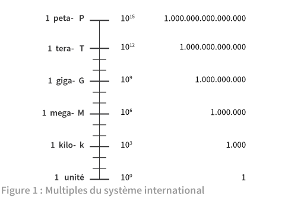
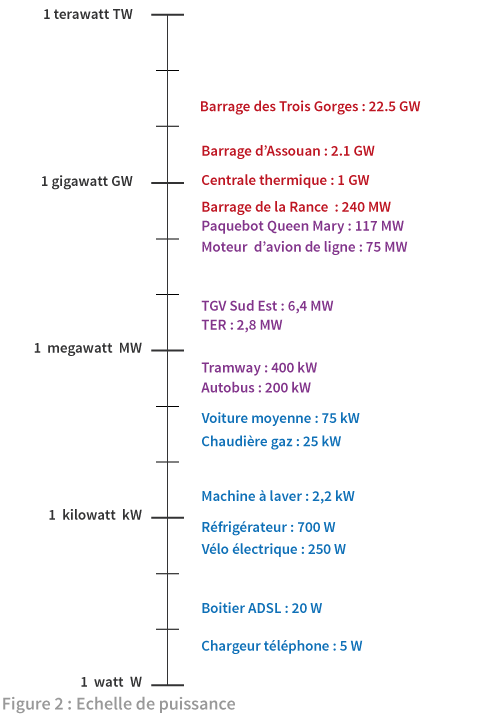
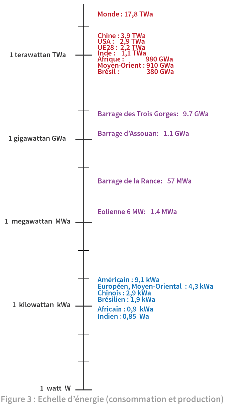
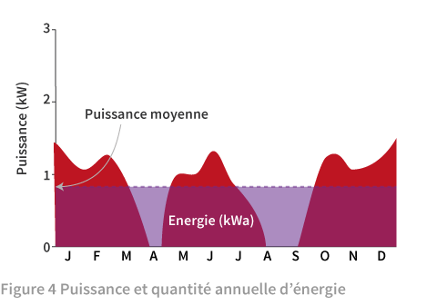

Introduction
On aborde ici les échelles de puissance et d'énergie sur lesquelles sont placés quelques repères. Une seule unité le watt (W) pour la puissance aide à voir les proportions. Il en est de même pour l’énergie quand on s'en tient à une unité, le watt-an (Wa) qui dérive du watt-heure (Wh) mais correspond mieux au bilan annuel (1 Wa = 8760 Wh, pour une année de 8760 heures).
Une fois donnée l’unité, les niveaux de puissance et quantités d’énergie peuvent varier considérablement suivant l’objet: taille d’installation, consommation individuelle ou d'une population (mondiale, nationale). Pour aider, le système international d'unités désigne sans ambiguïté les multiples de mille (milliers, millions, milliards, etc.). Au centre de la figure 1, on voit l’échelle logarithmique des multiples de mille. Le volet gauche donne le préfixe et le symbole d’un échelon. Le volet droit indique sa valeur en notation scientifique et en notation usuelle. La notation usuelle accumule des zéros vite difficiles à compter; la notation scientifique, plus compacte, donne le nombre de zéros dans l'exposant de 10.

Au-dessus de l’unité apparaît le kilo, premier échelon dont le préfixe dérive du mot grec pour mille. Les préfixes suivants proviennent aussi du Grec : méga pour grand, giga pour géant, téra pour monstre. Il devenait difficile de trouver des mots plus emphatiques. Quelqu’un a alors remarqué que tera était proche de tetra, mot grec pour 4 (ainsi tétraèdre : volume à 4 faces). Tera étant au quatrième échelon, cette coïncidence heureuse a inspiré la suite: continuer avec les mots grecs pour les nombres en leur retirant une lettre ; ainsi peta à partir de penta (pentagone: 5 côtés) puis exa à partir d’hexa (hexagone: 6 côtés).
Voyons maintenant l’échelle de puissance en watts.

En montant l’échelle de la figure 2, on trouve d’abord les équipements individuels comme les ampoules basse consommation de quelques watts, les équipements électroménagers et sèches cheveux autour du kilowatt pour finir avec les voitures vers 75 kW (environ 100 ch). Les transports collectifs montent au mégawatt (MW) ou plus: train, paquebot et moteur d’avion. Du côté de la production d’électricité, les puissances d’éoliennes, de parcs solaires ou de barrages hydroélectriques s’échelonnent de quelques à plusieurs centaines de mégawatts. Ensuite, les grands barrages, les centrales thermiques (à flamme ou nucléaire) se situent autour du gigawatt. Ici s’arrête aujourd’hui la taille des constructions humaines productrices d’énergie.
La figure 3 représente les quantités d’énergie consommées et cette fois nous descendons l’échelle. Le sommet est occupé par la consommation mondiale d’énergie qui s’élève en 2013 à près de dix-huit térawatts-an (17,8 Twa). En dessous, se situe la répartition entre les pays, commençant avec la Chine, puis les Etats-Unis et l’Union Européenne, les trois cumulant 9 Twa, plus de la moitié de la consommation mondiale. L’Afrique, l’Inde, le Moyen-Orient et le Brésil cumulent ensuite 3,4 Twa. Le reste, 4,4 Twa est réparti entre tous les autres pays.

Les records de production électrique sont détenus par les barrages des Trois Gorges en Chine et d'Itaipu au Brésil avec environ 10 GWa. Un autre grand barrage, Assouan en Egypte, fournit annuellement 1,1 GWa. C’est à peu près la même quantité d’énergie qu’une centrale nucléaire. Plus bas, les productions de l’usine marémotrice de la Rance 57 MWa et d’une éolienne autour de 1,4 MWa. Après le téra, le giga et le méga, le kilo, niveau des consommations individuelles, avec une moyenne mondiale de 2,5 kWa/hab et une dispersion des moyennes par pays entre 9,1 kWa pour un Américain à moins d’un kWa pour un Africain ou un Indien. Entre les deux, un Européen ou un Moyen-Oriental consomme 4,3 kWa. Mais, comme il est montré dans un des premiers articles de repères, il peut y avoir de fortes disparités entre pays européens.
Revenons sur les notions de puissance et d’énergie, différentes et reliées, et notre choix du watt-an comme unité d’énergie. Quand on achète un réfrigérateur, la dépense d’énergie est un critère du choix. Elle est indiquée dans l’étiquette énergie normalisée par un chiffre de consommation annuelle, par exemple 200 kWh/an. La conversion en Wa (8,76 kWh équivaut à 1 Wa) donne 22,8 Wa/an. La durée de l'année,au dénominateur, multiplie le numérateur. On peut l'éliminer et obtenir une puissance de 22,8 W. C’est la puissance moyenne de fonctionnement du réfrigérateur, qui intègre les périodes de marche à pleine puissance (160 W) et les arrêts (puissance nulle).

La figure 4 l’illustre dans le cas général d’un historique de puissance d’un objet producteur ou consommateur d’énergie. La quantité annuelle d’énergie correspond à la surface rouge délimitée par la courbe de puissance au cours des mois de l'année. Le rectangle bleu de même surface donnerait la même quantité d’énergie avec une puissance constante sur l’année : c’est la puissance moyenne. Quand l’énergie est exprimée en Wa, son chiffre est celui de la puissance moyenne. Ceci permet la comparaison directe entre puissance installée (maximum délivré par une installation) et puissance moyenne correspondant à la production (ou consommation) moyenne. ◊
Février 2016